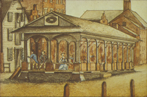
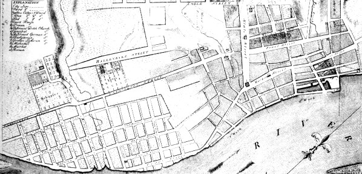

|
This detail is from a larger painting made during the 1850s by James Eights. It shows the Market House as it may have appeared in the early 1800s. Erected in the middle of Market Street about 1765 when it was first shown on a British army map, it served as a merchant's exchange and as the official station for weighing and valuing farm produce and country products. It quickly became the center of Albany business life as regional farmers bartered with established merchants and newly arrived entrepreneurers as well. The Laws of Albany published in 1773 regulated the sale of meat and confined those transactions to the public market house. During colonial days, most Albany merchants strove to live within sight of the Market House. After the Revolution, the Albany business district spread out along the riverfront, up the State Street Hill, and to other parts of the city as well. With the regional population booming, the Market House was no longer adequate to serve the business needs of an emerging North American entrepot. The old markethouse building fell into disuse and was removed from the middle of a busy thoroughfare in 1805. The public markets then were relocated around an expanding city. Today, a rotating "Farmer's Market" - held around the city on different days reminds us of the Market House of old Albany. first posted: 7/28/00; last revised 5/10/09 |